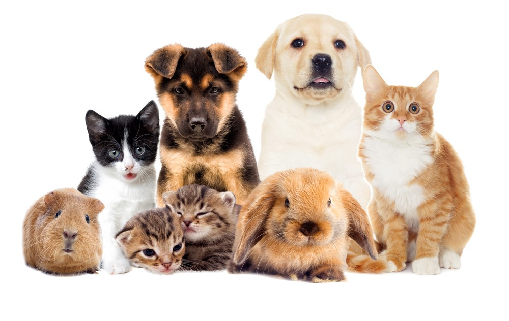
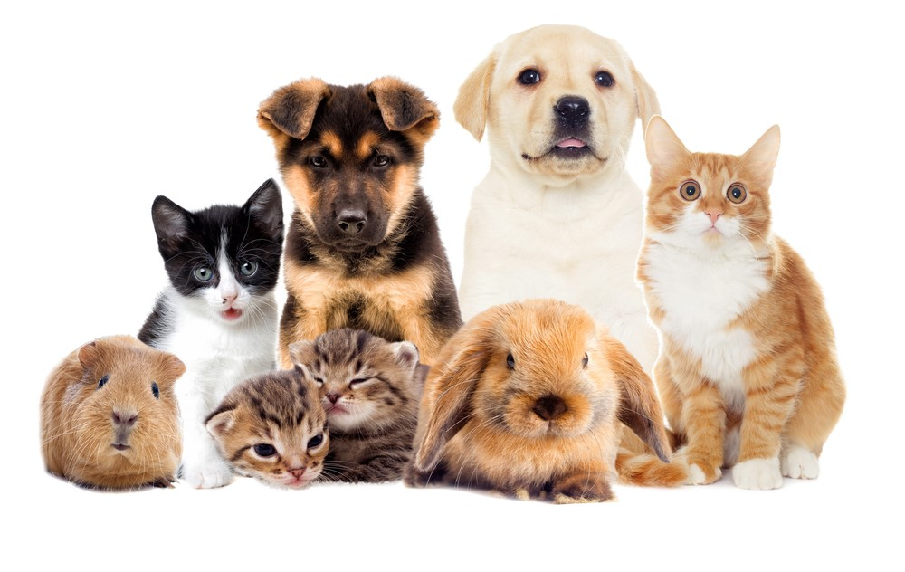

Imágenes de mis mascotas:
 

Listas de mascotas:
Cosas que mis mascotas aman
- Estar conmigo
- Correr
- Dormir
Cosas que mis mascotas odian
- Estar solos
- Que me junte con uno y con el otro no
- Que se le acabe la comida y agua
Si quieres ver videos de mis mascotas, dar click aquí!
Formularios:
¿Tu mascota es hembra o macho?
¿Tu mascota qué tipo es?